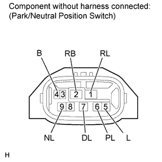

PARK / NEUTRAL POSITION SWITCH > INSPECTION |
| 1. INSPECT PARK/NEUTRAL POSITION SWITCH ASSEMBLY |
 |
Measure the resistance according to the value(s) in the table below.
| Tester Connection | Condition | Specified Condition |
| 2 (RB) - 6 (PL) | Shift lever in P | Below 1 Ω |
| 2 (RB) - 6 (PL) | Shift lever not in P | 10 kΩ or higher |
| 2 (RB) - 1 (RL) | Shift lever in R | Below 1 Ω |
| 2 (RB) - 1 (RL) | Shift lever not in R | 10 kΩ or higher |
| 2 (RB) - 9 (NL) | Shift lever in N | Below 1 Ω |
| 2 (RB) - 9 (NL) | Shift lever not in N | 10 kΩ or higher |
| 2 (RB) - 7 (DL) | Shift lever in D or S | Below 1 Ω |
| 2 (RB) - 7 (DL) | Shift lever not in D or S | 10 kΩ or higher |
| 4 (B) - 5 (L) | Shift lever in P or N | Below 1 Ω |
| 4 (B) - 5 (L) | Shift lever not in P or N | 10 kΩ or higher |